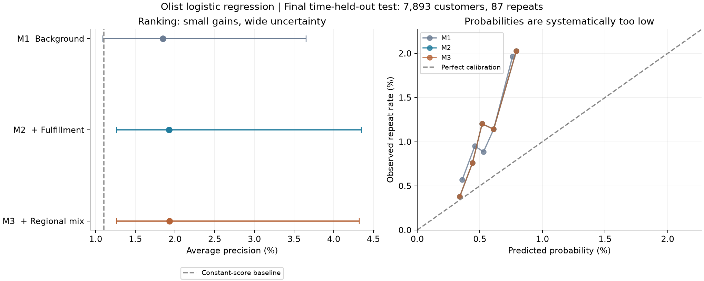
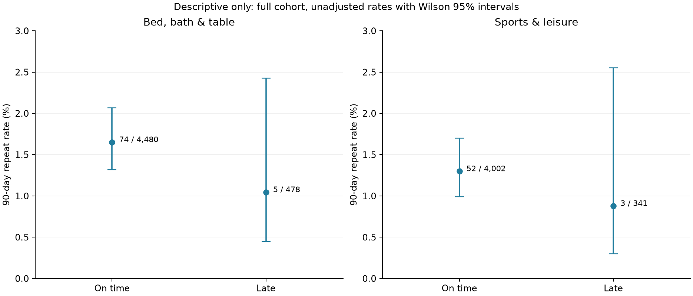
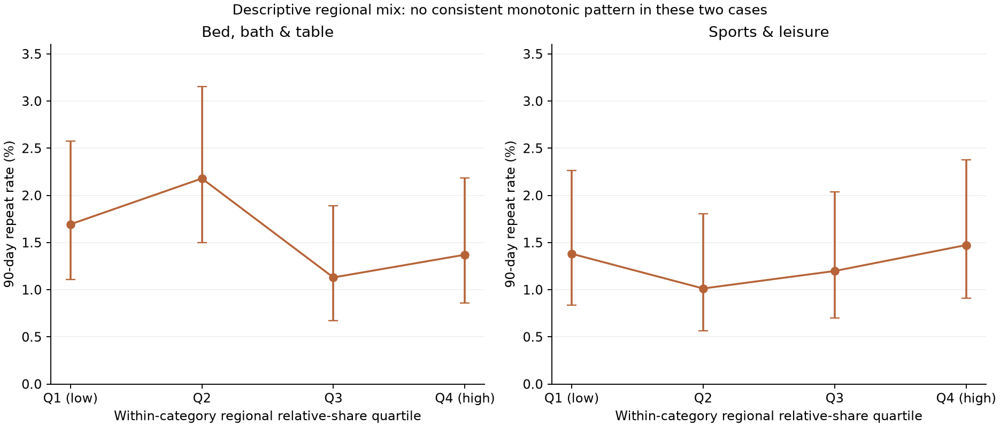

Archived stage report. Later stages are documented in
the project README. This packaging preview did not rerun any experiments.
Olist：履约体验与地区消费结构的增量预测价值
2026-10-16 · 三组整体逻辑回归 · 两个品类描述案例 · 未运行 LightGBM
结果：履约信息带来小幅排序改善，但主要指标的差值区间包含零。地区消费结构的额外贡献接近零。模型平均复购概率约0.54%，实际为1.10%，概率校准明显不足。
1. 实验设置
沿用已审计的51,981位客户、567次90天复购。初始训练6,459人/71次复购，验证6,862人/60次复购；固定设置后使用2017年底前已成熟的25,780人/303次复购重新训练，测试2018-04-01至05-02送达的7,893人/87次复购。训练与验证、最终训练与测试均满足90天标签成熟要求。
先保存实验方案，再训练。三组均使用L2逻辑回归（C=0.1、lbfgs、最大3000次迭代）；不调参、不做类别重采样或权重平衡。缺失值中位数、标准化和类别编码均只在各自训练集学习。出现不足200次的品类/州在编码中归入低频组。验证集只用于诊断，没有根据其分数选模型设置。代码的特征白名单不包含标签、复购日期或客户标识。
- M1：首购金额、件数、重量、体积、买卖双方近似距离、多卖家标记、缺失标记、月份正余弦、品类和州。
- M2：M1加送达耗时、是否延误、延误天数、运费/商品金额。连续长尾变量先log1p再标准化。
- M3：M2加首购品类的当地平滑占比，以及当地/全国占比的对数。多品类订单按品类平均。
地区特征使用首购前180天且当时已经审批的订单，排除自身；每笔历史订单在品类间分配总权重1。全国品类占比使用每类0.5的固定平滑，州级占比向全国收缩100笔订单等价量。两个参数事前固定，没有用验证或测试结果优化。地区特征只反映Olist观察到的成交结构，不等同真实需求或文化。
2. 最终测试结果
测试实际复购率为 1.102%。AP为Average Precision，是非插值的PR曲线汇总指标；不是ROC-AUC，也不是概率准确率。此处不使用梯形积分PR-AUC。↑越高越好，↓越低越好。
M2筛选前790人识别19位复购客户，命中率2.405%、覆盖全部复购客户的21.84%，约为随机筛选预期命中率的2.18倍；M1识别17位。M3与M2同为19位。这是排序结果，不是营销带来的增量复购。

3. 增量是否稳定
| 比较 |
AP差值 |
按州重采样95%区间 |
| M2-M1 |
0.000773 |
[-0.001232, 0.007410] |
| M3-M2 |
0.000030 |
[-0.000111, 0.000382] |
客户级与州级各进行1000次配对bootstrap，使用同一批固定测试预测比较模型。表中为州级重采样95%百分位区间。两次增量AP区间均包含零，不能声称有稳定改善。州级样本仅27组且大小不均，区间也只能作为不确定性诊断。bootstrap没有重新训练模型，未包含模型训练不稳定性、时间漂移或渠道覆盖误差。
M2的Brier相比M1略降；客户级区间不含零，但州级区间包含零。不能只挑一种重采样方式宣称稳健提升。M3相对M2在Brier和log loss上几乎相同。
4. 更重要的问题：概率偏低
M2/M3平均预测约0.54%，实际为1.10%。直接使用训练期平均复购率的M0，Brier和log loss反而更好。因此当前模型有一定排序能力，但不能把输出概率直接用于利润计算或精细运营决策。
固定模型的输入贡献分解显示，从最终训练池到测试期，月份正余弦合计使平均log-odds变化约 -0.761，是概率下移的主要模型内贡献。最终训练主要覆盖2017年下半年，测试位于次年春季，季节项在有限月份上的外推不可靠。这是模型预测的数学分解，不是已经证明真实季节效应，也不是对全部校准误差的因果解释。
首次验证也已出现低估：实际0.874%，M1/M2/M3分别平均预测约0.255%/0.214%/0.212%。按事先固定比较，本轮没有看到测试结果后再删月份变量、重新校准或换参数。后续若修改，需要把它标为新的探索版本，并避免继续把本测试集称作全新的独立证据。
验证集详细指标
| model |
AP |
Brier |
mean_prediction |
top10_hits |
| M0 |
0.008744 |
0.008672 |
0.010992 |
NaN |
| M1 |
0.009904 |
0.008706 |
0.002546 |
7.000000 |
| M2 |
0.010581 |
0.008711 |
0.002145 |
7.000000 |
| M3 |
0.010179 |
0.008711 |
0.002116 |
5.000000 |
5. 模型系数能解释什么
M3中，送达耗时和运费负担的标准化系数为负；当地品类占比和相对占比系数接近零。延误标记与延误天数同时存在，系数分别为负和正，必须联合理解，不能据此说“延误越久越好”。所有系数都经过正则化，且只表示控制已纳入变量后的预测关联；本轮不报告因果效应或显著性结论。
6. 两个品类仅做描述
| 品类 |
分组 |
客户 |
复购 |
复购率 |
95%区间 |
| 床浴桌用品 |
全部 |
4958 |
79 |
1.59% |
1.28%—1.98% |
| 床浴桌用品 |
准时 |
4480 |
74 |
1.65% |
1.32%—2.07% |
| 床浴桌用品 |
延误 |
478 |
5 |
1.05% |
0.45%—2.43% |
| 运动休闲 |
全部 |
4343 |
55 |
1.27% |
0.97%—1.64% |
| 运动休闲 |
准时 |
4002 |
52 |
1.30% |
0.99%—1.70% |
| 运动休闲 |
延误 |
341 |
3 |
0.88% |
0.30%—2.55% |

两个品类中，延误组的原始复购率都较低，但事件仅5个和3个，区间很宽。这些比较未调整金额、地区或商品差异，不能据此认定改善配送会提高复购。

按各品类内部的地区相对占比分成四组后，两者都没有一致的单调上升形态。这里使用全审计队列，仅为描述，不能充当独立验证或反过来调整模型。区间为客户级Wilson区间，未处理州内相关性。
7. 当前建议
保留M1—M3这次完整比较，如实报告“履约信息有弱信号、地区消费结构未显示稳定的额外线性预测价值”。这不证明地区因素不重要：州和品类已在M1中，M3检验的是两项特定历史结构指标在其上的额外贡献，且受稀少复购和模型形式限制。
下一步优先讨论季节项外推与概率校准，再决定是否加入LightGBM。复杂算法不会自动增加复购事件或解决观察数据的因果识别问题。本轮止于逻辑回归与描述案例，没有自动运行LightGBM或发布GitHub。
8. 复核、文件与来源
三组模型在两个训练阶段共拟合6次，全部收敛。复购标签沿用前次逐客户复核结果；30条固定随机样本的地区加权历史经直接过滤核对一致；AP和Brier独立重算一致；训练与测试客户不重叠、标签成熟边界检查通过。
拟合检查
| stage |
model |
n_features |
iterations |
converged |
| validation |
M1 |
31 |
34 |
True |
| validation |
M2 |
35 |
33 |
True |
| validation |
M3 |
37 |
35 |
True |
| test |
M1 |
51 |
53 |
True |
| test |
M2 |
55 |
55 |
True |
| test |
M3 |
57 |
55 |
True |
完整机器可读结果 · 模型指标 · 品类描述表 · 系数 · 校准分组 · 州级诊断 · 固定实验设置 · 复现说明
数据：Olist发布页。方法：scikit-learn逻辑回归、Average Precision定义。使用scikit-learn 1.9.1。
源ZIP SHA-256：967e41e04fc306fe604e2a693f488995a8b41e5047418f8a5c8e4abd6deca784。本地报告，不代表商业部署或因果验证。